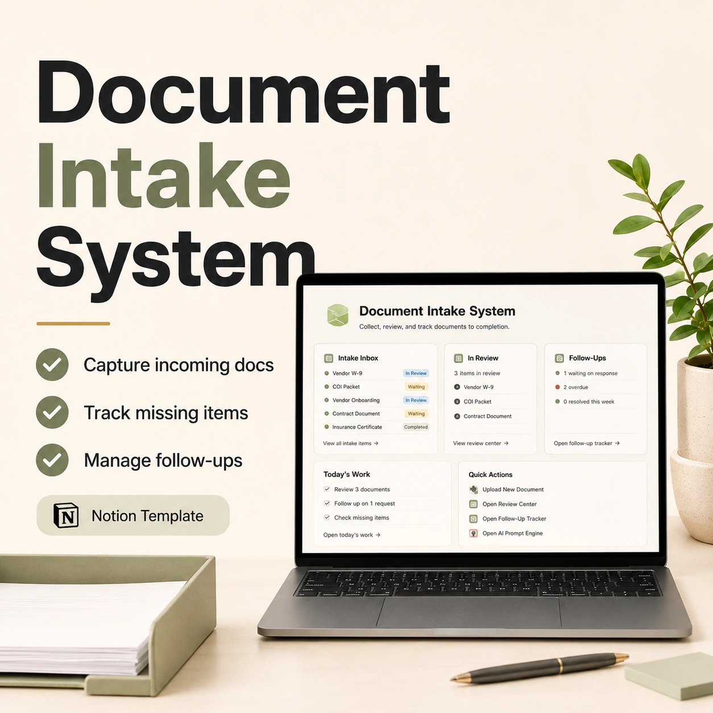

Incoming documents
Keep incoming files, request details, owners, and review status visible.
Document Intake System is a Notion template for collecting incoming documents, reviewing submissions, tracking missing files, and managing follow-ups from one simple workspace.

Promotional cover artwork. See the contents and requirements below.
Keep incoming files, request details, owners, and review status visible.
Track what has been reviewed, what needs checking, and what is ready for the next step.
See missing files, follow-up notes, and who needs to respond.
Use it for client files, admin requests, compliance records, submissions, and workflows where files arrive in pieces.
Yes. You can adjust the properties, views, statuses, and follow-up stages inside Notion.
No. It is an intake and tracking system. You can link to stored files or attach files inside your Notion workflow.
Keep submissions, missing files, and follow-ups visible.
$9+ USD
One-time purchase. You may pay above the stated minimum. Checkout may add applicable taxes.
Requires a Notion account. Optional AI prompts use your chosen AI service.